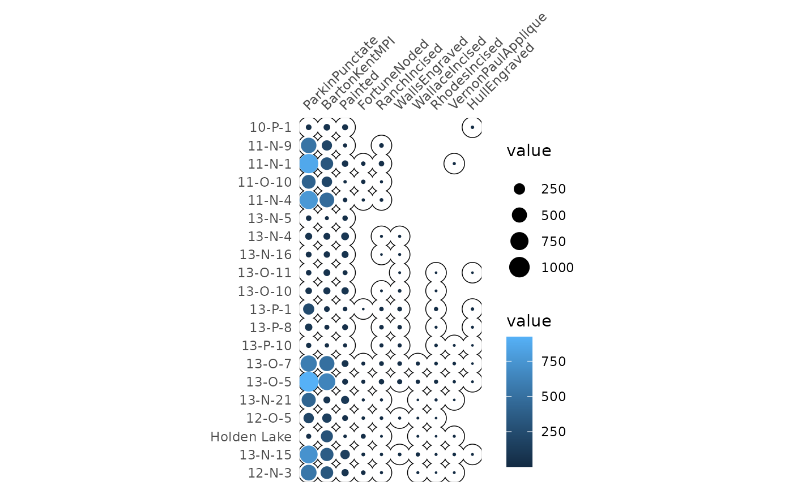
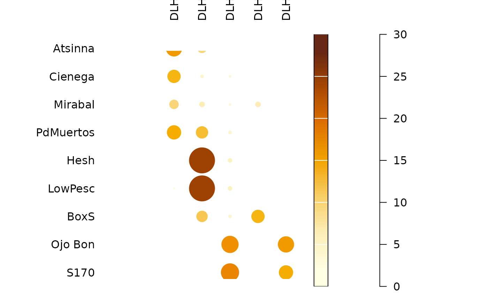
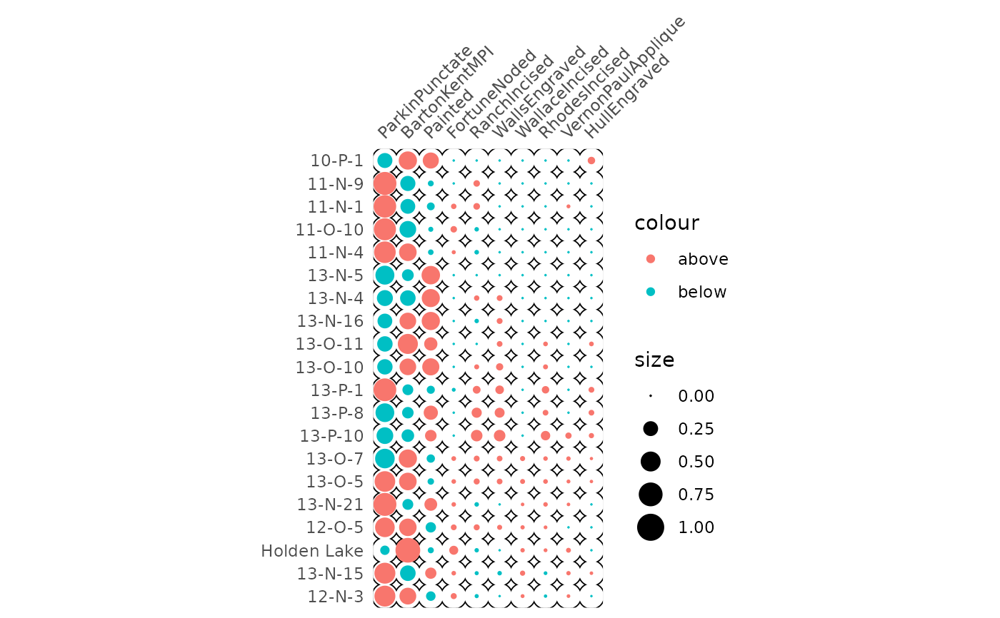

Plots a spot matrix.
plot_spot(object, ...) # S4 method for matrix plot_spot(object, threshold = NULL, diag = TRUE, upper = TRUE, ...) # S4 method for dist plot_spot(object, diag = FALSE, upper = FALSE, ...) # S4 method for OccurrenceMatrix plot_spot(object, diag = FALSE, upper = FALSE, ...)
| object | An abundance matrix to be plotted. |
|---|---|
| ... | Extra parameters to be passed to |
| threshold | A |
| diag | A |
| upper | A |
A ggplot2::ggplot object.
The spot matrix can be considered as a variant of the Bertin diagram where the data are first transformed to relative frequencies.
Adapted from Dan Gopstein's original idea.
Other plot:
plot_bar,
plot_diversity,
plot_line,
plot_matrix
N. Frerebeau
## Plot spot diagram of count data... data("mississippi", package = "folio") counts <- as_count(mississippi) ### ...without threshod plot_spot(counts)
### ...with the column means as threshold plot_spot(counts, threshold = mean)
### ...with the column medians as threshold plot_spot(counts, threshold = median)